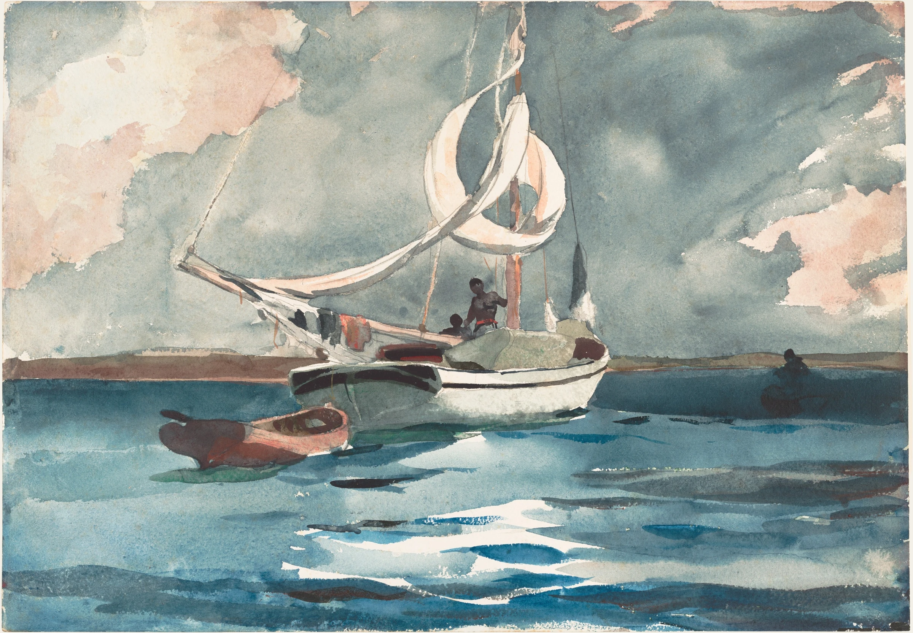

From SocialAcolyte
Projects
- 2026data reportsreports
- 2025webpapersoftware ↗
- 2025mocap rigshardware
- 2025curated ML datadata
- 2024robotics softwaresoftware
- 2024mindcraftagents ↗
- 2024data-layer thesisessay · pdf ↓

Winslow Homer, Sloop, Nassau, 1899. Painted as you scroll.
I work where data meets machines. I would rather make the data right than make the model loud.